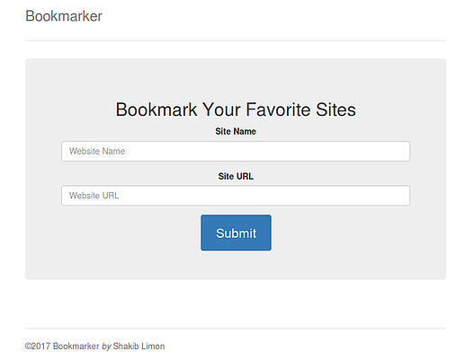
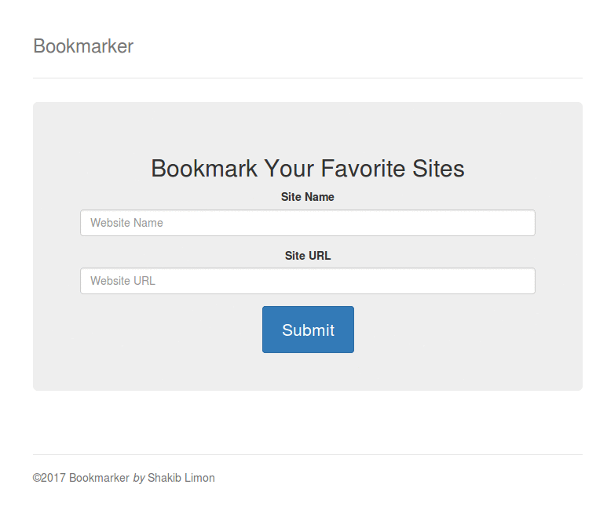

এইবার সেমিস্টার এর ছুটিতে তেমন কোন কাজ ছিল না , খেয়ে ঘুমিয়ে সময় পার করছিলাম , স্লো ইন্টারনেটের ইউটিউবে একটা ভিডিও চোখে পরল , যেটা দেখে দেখে এটা বানানোর চেষ্টা করছিলাম অনেক অনেক ভুল আর আলস আমি আর আমার মেধা সব মিলিয়ে ৩০-৫০ মিনিটের প্রোগ্রাম বানাতে ১২ দিন কেটে গেল । আগের মত আর ব্লগ লেখা হয় না ,লেখার সময় পাই নাই। আজ এবার একটু চেষ্টা ............ কি কি থাকবে প্রোগ্রামে সেটা এই ভাবে চিন্তা করছিলামঃ একটা টেস্ট বক্স থাকবে সেখানে বুকমার্ক- র নাম দিব ,অরেক টা টেস্ট বক্স থাকবে সেখানে বুক মার্ক এর ঠিকানা (URL) টা দিব। একটা বাটন থাকবে যেটা ক্লিক করার পর বুক মার্ক কে সেভ করবে এবং নিচের একটা বক্স এ দেখাবে . সেখানে থেকে আমারা চাইলে সেই সেভ করা ঠিকানাতে ভিজিট করতে পারব , আবার চাইলে সেভ করা ঠিকানাটা ডিলিট করতে পারব । তাহলে শুরু করা যাক , প্রথমে ডিজাইন টা করে ফেলি তার জন্য বুটস্ট্রাপ ব্যবহার করব। getbootstrap থেকে ডাউনলোড করে নিব (3.3.7 ভার্সান ব্যবহার করব )। এরপর Jumbotron এর মাধ্যমে টেস্ট বক্স এবং বাটনের ডিজাইন করব ।
১৩ এবং ১৪ তম লাইনে বুটস্ট্রাপ মিনিফাইট ডিজাইন এর সাথে লিঙ্ক করা হয়েছে । সেভ করা বুকমার্ক যেন সঠিক ভাবে বাউজারের লোকাল স্টোরে থাকে জন্য jQuery CDN ব্যবহার করব । এর জন্য jquery গিয়ে jQuery 3.x এর uncompressed ক্লিক করে কপি করে স্ক্রিপ্ট এর মাঝে পেস্ট করে দিলেই কাজ শেষ ।

ডিজাইন এর কাজ শেষ এখন এটা কে ব্রাউজারে চালিয়ে দেখতে পারি, কিন্তু বাটন তো কাজ করে না, কিভাবে কি হয়ে গেল হায় হায় , এ কেমন বিচার ?? কাজ করবে কিভাবে এখনো তো বাটন এর অ্যাকশান সেট করি নাই । তাহলে এখন বুক মার্ক সেভ করার ফ্যাংশান সেট করা যাকঃ
ডিলিট বুক মার্ক এর ফ্যাংশানঃ
সেভ করা বুকমার্ক ডাটা ব্রাউজারের লোকাল স্টোর থেকে পেইজ-এ দেখানোর জন্য ডাটা গুলা কে Fetch করতে হবে । সেই সাথে ভিজিট এবং ডিলিট বাটন থাকবে ।
এখন ফর্ম এর জন্য একটা Validation করবঃ
আউটপুট :
